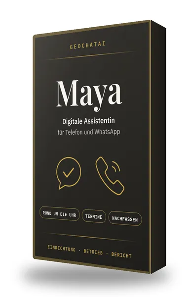
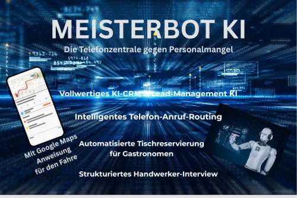
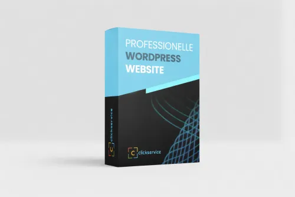
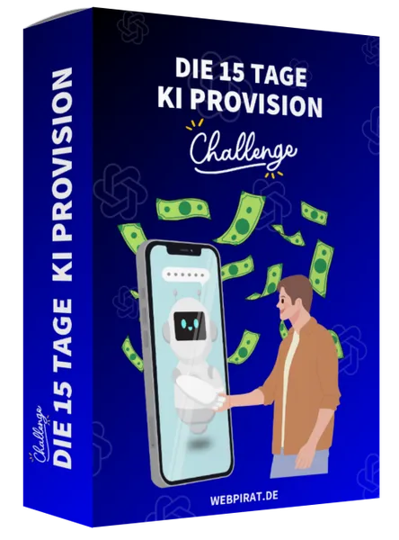

KI Agent Minikurs (Gratis Online Kurs)
Produktprofil · Marktplatz-Daten 2026-10-14 · Verkaufsseiten-Recherche 2026-10-14 · Kategorien: Software, Computer & Internet, Online Marketing & E-Business
- KI Agent Minikurs (Gratis Online Kurs) ist ein/e Mitgliederbereich & Videokurs in Software und Computer & Internet, vertrieben über den Digistore24-Marktplatz von Anbieter webpirat, gelistet seit 2025-09-19.
- Listenpreis $5.17; Digistore24 meldet 17 % Checkout-Konversion, 3.08 % Stornierungsquote und 50 % Affiliate-Provision.
- Verdienst pro Verkauf (Affiliate): $3.09 (Anbieter-seitige Statistik, keine Prognose).
Interesse an KI Agent Minikurs (Gratis Online Kurs)? Aktueller Preis, Boni und Garantiebedingungen finden Sie auf der offiziellen Seite des Anbieters:
Offizielle Verkaufsseite ansehen
Affiliate-Link (Werbung) — wir verdienen ggf. eine Provision, ohne Mehrkosten für Sie.
Marktplatz-Daten
| Produkttyp | Mitgliederbereich & Videokurs |
|---|---|
| Preis | $5.17 (Single payment) |
| Affiliate-Provision | 50 % |
| Garantie/Rückgabe | Laut Verkaufsseite des Anbieters — vor dem Kauf auf der offiziellen Seite prüfen |
| Anbieter | webpirat (gelistet seit 2025-09-19) |
| Marktplatz-Statistiken* | Checkout-Konversion 17 % · Stornoquote 3.08 % · Verdienst/Verkauf $3.09 |
* Anbieter-seitige Statistiken von Digistore24; sie hängen von der Traffic-Qualität ab und sind keine Prognose.
Marktplatz-Beschreibung des Anbieters
Verdiene 50 % Provision auf alle Add-ons und Order-Bumps! Das Produkt trifft den Zeitgeist: KI-Agenten im Affiliate Marketing – aktuell eines der heißesten Themen überhaupt. Produkt & Launch-Details Hauptprodukt: Mini-Videokurs (5 Lektionen, 20 Minuten) Launch-Phase: ca. 10 Tage für 0 € (Bis 30.09.2025), danach wird der Preis auf 27€ → starke Conversion durch Verknappung Upsells & Order-Bumps: Hochwertige Add-ons wie „53 KI-Agenten Use Cases“ – 50 % Provision für dich Deine Vorteile Trend-Thema mit extrem hoher Nachfrage Kostenloses Hauptprodukt zieht massenhaft Leads an Attraktive Upsells sorgen für direkte Provisionen ab dem ersten Tag Preissteigerung nach Launch bringt zusätzlich langfristige Verkäufe Fragen? Schreib uns gern: info@webpirat.de
Von der Verkaufsseite des Anbieters
Seitentitel: KI-Agenten für Affiliates: Minikurs
Meta-Beschreibung: 🚀 Lerne KI-Agenten für Affiliate Marketing! Mini-Kurs (7 Lektionen) von Webpirat.de für nur 14,90€. Mehr Reichweite & automatisierte Einnahmen!
Recherche-Methode: rohes HTML · 6 Wörter · Qualität: thin · recherchiert am 2026-10-14. Vollständige Recherche-Datei (MD) ↗
Wie Produkte dieser Art geliefert werden
Allgemeiner Hinweis zu diesem Produkttyp (keine anbieterspezifische Anleitung): Videokurse laufen über einen Mitgliederbereich: nach dem Checkout erhalten Sie Zugangsdaten per E-Mail und können die Lektionen in Ihrem eigenen Tempo streamen. Für die genaue Anwendung von KI Agent Minikurs (Gratis Online Kurs) sind die offizielle Verkaufsseite und die enthaltenen Materialien maßgeblich.
Gut zu wissen
- Keine Garantie-Formulierung in unserer Recherche gefunden — bestätigen Sie das Rückgabefenster auf der offiziellen Seite, bevor Sie kaufen.
- Marktplatz-Zahlen (Preis, Provision, Konversion, Stornoquote) — Quelle: offizielle Digistore24-Marktplatz-API (Affiliate-Sicht), Stand 2026-10-14. Gegenprüfung: Marktplatz-Suche nach Produkt-ID 636605.
- Verkaufsseiten-Zitate — Quelle: https://kiagent.webpirat.de/, abgerufen 2026-10-14 (Methode: rohes HTML). Verify: offizielle Seite öffnen.
- Garantie / Rückgabe — vom Anbieter festgelegt; vor dem Kauf auf der Verkaufsseite bestätigen.
- Nicht von uns geprüft: Produktqualität, Ergebnisse, Testimonials — kein Praxistest für dieses Listing durchgeführt.
Häufige Fragen zu KI Agent Minikurs (Gratis Online Kurs)
Antworten aus dem Marktplatz-Snapshot (2026-10-14) und der Verkaufsseiten-Recherche (2026-10-14); Anbieteraussagen sind inline gekennzeichnet.
Was ist KI Agent Minikurs (Gratis Online Kurs)?
KI Agent Minikurs (Gratis Online Kurs) ist ein Angebot des Typs „Mitgliederbereich & Videokurs" im Digistore24-Marktplatz, Anbieter: webpirat, gelistet seit 2025-09-19. Eingepflegt unter Software und Computer & Internet. Digistore24 wickelt Checkout, Lieferung und Rückgaben ab.
Wie viel kostet KI Agent Minikurs (Gratis Online Kurs)?
Der Digistore24-Marktplatz listet es für $5.17 (single payment). Preise legt der Anbieter fest und können sich ändern — der Marktplatz-Eintrag oben zeigt den Schnappschuss; die offizielle Verkaufsseite zeigt den aktuellen Preis.
Gibt es eine Geld-zurück-Garantie für KI Agent Minikurs (Gratis Online Kurs)?
Unsere Verkaufsseiten-Recherche hat keine explizite Garantie-Formulierung gefunden. Viele Digistore24-Produkte bieten 60 Tage Geld-zurück, aber das legt jeder Anbieter selbst fest — bestätigen Sie es auf der offiziellen Verkaufsseite, bevor Sie kaufen.
Ist KI Agent Minikurs (Gratis Online Kurs) seriös?
Wir bewerten keine Seriosität — wir veröffentlichen überprüfbare Zahlen: Anbieter webpirat (gelistet seit 2025-09-19), Checkout-Konversion 17 %, Stornoquote 3.08 %, Affiliate-Verdienst/Verkauf $3.09 (alles Anbieter-seitige Marktplatz-Statistiken). Lesen Sie unsere 6-Punkte-Bewertungsmethode und entscheiden Sie anhand der Zahlen — oder diskutieren Sie KI Agent Minikurs (Gratis Online Kurs) auf GitHub.
Wo kann ich KI Agent Minikurs (Gratis Online Kurs) sicher kaufen?
Nur über die offizielle Verkaufsseite, die auf dieser Seite verlinkt ist (Checkout und Rückgaben laufen über Digistore24). Prüfen Sie dort Preis und Garantie vor der Bestellung. Der Link ist ein Affiliate-Link — der Kauf unterstützt diese Website ohne Mehrkosten für Sie.
Wie erhalte ich KI Agent Minikurs (Gratis Online Kurs) nach der Zahlung?
Der Checkout läuft über Digistore24: Nach der Zahlung erhalten Sie Ihren Zugang oder Download per E-Mail und in Ihrem Digistore24-Kundenkonto. Lieferdetails für diesen Produkttyp: Videokurse laufen über einen Mitgliederbereich: nach dem Checkout erhalten Sie Zugangsdaten per E-Mail und können die Lektionen in Ihrem eigenen Tempo streamen. Bei Problemen kann der Digistore24-Käufersupport Ihre Bestellung wiederherstellen.
Alle 50 Käuferfragen zu Software — das komplette Kategorie-FAQ.
KI Agent Minikurs (Gratis Online Kurs) auf Reddit diskutieren
In Community-Threads vergleichen echte Käufer Erfahrungen. Wir verlinken Communities, keine einzelnen Posts — Threads verschwinden, Subreddits bleiben:
- r/Unternehme — deutschsprachige Community mit Diskussionen zu software.
- r/Vertrieb — deutschsprachige Community mit Diskussionen zu software.
- Reddit-Suche nach „KI Agent Minikurs (Gratis Online Kurs)" — Live-Ergebnisse, von uns nicht beeinflusst.
- Top-„Erfahrungs"-Treffer dieses Jahr — selbst nach Aktualität filtern.
Passendes auf Amazon.de
Physische Produkte und Zubehör, die häufig zusammen mit KI Agent Minikurs (Gratis Online Kurs) gekauft werden:
- Software auf Amazon.de — Top-Ergebnisse, Amazon-Ranking.
- Bestseller: Software — live Liste von Amazon, von uns nicht kuratiert.
Werbung: Als Amazon-Partner verdient DigistorePicks DE an qualifizierten Käufen (Partner-tag adminstorede-21). Amazon setzt eigene Preise und Provisionen (niedrige einstellige Prozente — weit unter den 30–75% der Digistore24-Anbieter). Amazon ist ein Convenience-Angebot für Sachprodukte, kein Ersatz für das digitale Produkt oben.
Ähnliche Angebote in Software

Maya: digitale Assistentin für WhatsApp und Telefon Maya beantwortet Kundenanfragen kleiner Betriebe rund um die Uhr auf WhatsApp und im Paket mit Telefon auch
Zencaptcha schützt Webseiten vor Spam und betrügerischen Aktivitäten. Falsche und temporäre E-Mail-Adressen werden erkannt und Bots werden herausgefordert, noch

+++ Willkommen beim Meisterbot-Partnerprogramm! +++ Verdienen Sie über 850 EUR Provision pro Sale mit der ersten schlüsselfertigen KI-Telefonzentrale für den Mi

Verdienen Sie 40 % Provision! Werden Sie Affiliate und profitieren Sie von unserem attraktiven 40% Partnerprovisionssatz – eine der höchsten Provisionen auf Dig
Weitere Angebote von webpirat
Gesamtes Sortiment: webpirat Anbieter-Hub — alle Listings mit Marktplatz-Daten.
NEU - Gratis Buch zu verschenken (Thema: Affiliate Marketing, WordPress, SEO & Online Geld verdienen) Das Gratis E-Book ist mit unserem beliebten Video-Coac

Passives KI Affiliate Marketing 2025 – Low-Budget Funnel mit High-Price Backend & 50 % Provision Jetzt Affiliate werden und von einem bewährten Low-Budget-F

Die 15-Tage KI-Provision-Challenge von Webpirat: Jetzt GRATIS für 0€ statt 27 € Ahoi liebe/r Geschäfts-Partner/in! Ich freue mich riesig, dir dieses brandneue W
KI Agent Minikurs (Gratis Online Kurs) ist auch gelistet in
Computer & Internet (317 Produkte) · Online-Marketing & E-Business (831 Produkte)
Ähnliche Suchanfragen
Wo Sie es sich ansehen können
Wo Sie es sich ansehen können
Aktuelle Preise, Garantie und Boni finden Sie auf der offiziellen Verkaufsseite:
Offizielle Verkaufsseite ansehen
Das ist ein Affiliate-Link (Werbung) — kaufen Sie darüber, verdienen wir ggf. eine Provision, ohne Mehrkosten für Sie.
Quellen & weiterführende Informationen
- Offizielle Verkaufsseite (aktueller Preis, Garantie, Boni): kiagent.webpirat.de/ (Affiliate-Link)
- Öffentliche Digistore24-Produktseite: checkout-ds24.com/product/636605
- Vollständige Recherche-Datei (Markdown, versioniert): content/products/54107-ki-agent-minikurs-gratis-online-kurs.md
- Affiliate-Supportseite des Anbieters: www.webpirat.de/werde-affiliate/
- Marktplatz-Kategorie: Software
Wie wir Produkte wie KI Agent Minikurs (Gratis Online Kurs) bewerten
Sechs Prüfungen, ausschließlich mit offiziellen Marktplatz-Zahlen. Die vollständige Bewertungsmethode lesen · unsere Recherche-Standards & Kennzeichnung.
Fragen oder eigene Erfahrungen mit KI Agent Minikurs (Gratis Online Kurs)?
Praxis-Tests veröffentlichen wir erst, nachdem wir ein Produkt selbst gekauft haben — aber Ihre Erfahrung hilft anderen Lesern: Diskussion zu KI Agent Minikurs (Gratis Online Kurs) auf GitHub starten/verfolgen. Falsche Zahl gefunden? Korrektur melden — jede Seite zeigt ihre Datenstände, Korrekturen gelten für die ganze Website.